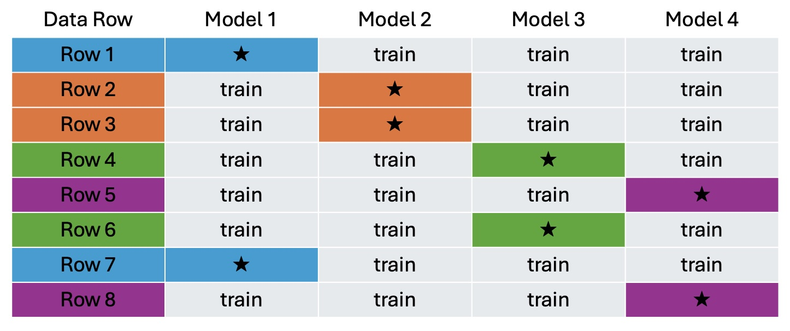
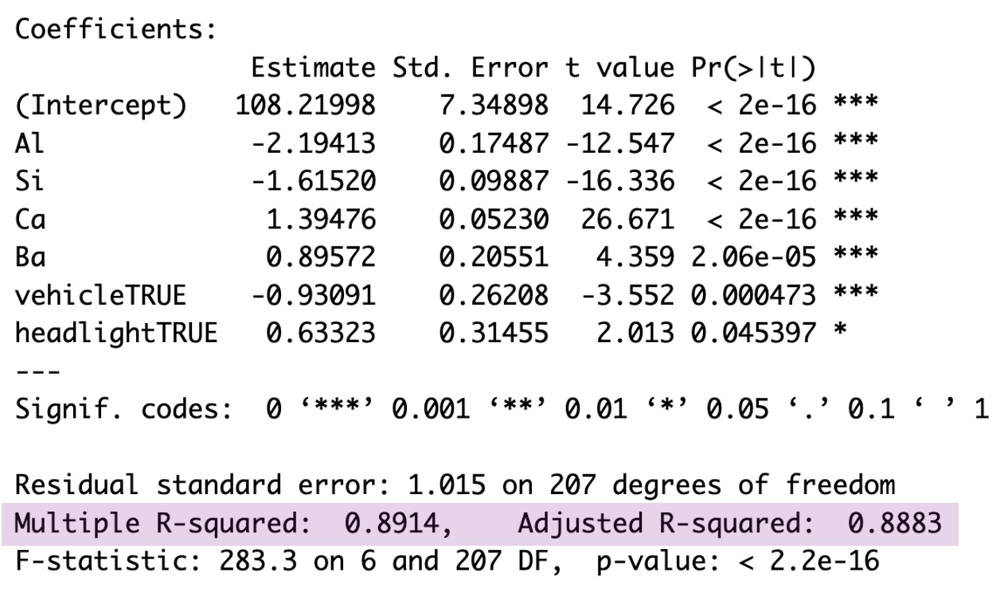
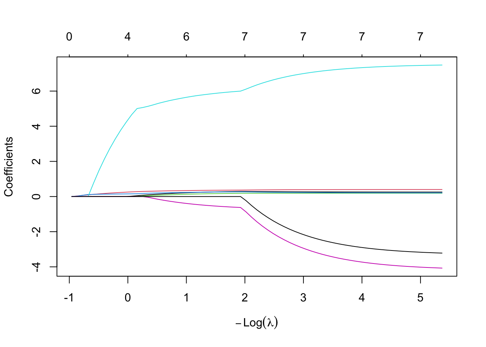
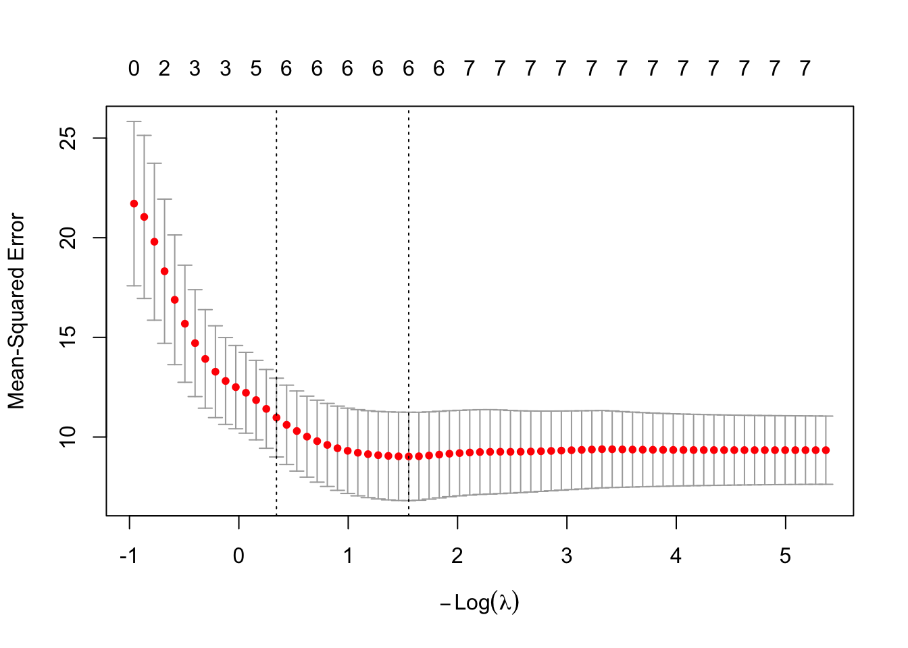
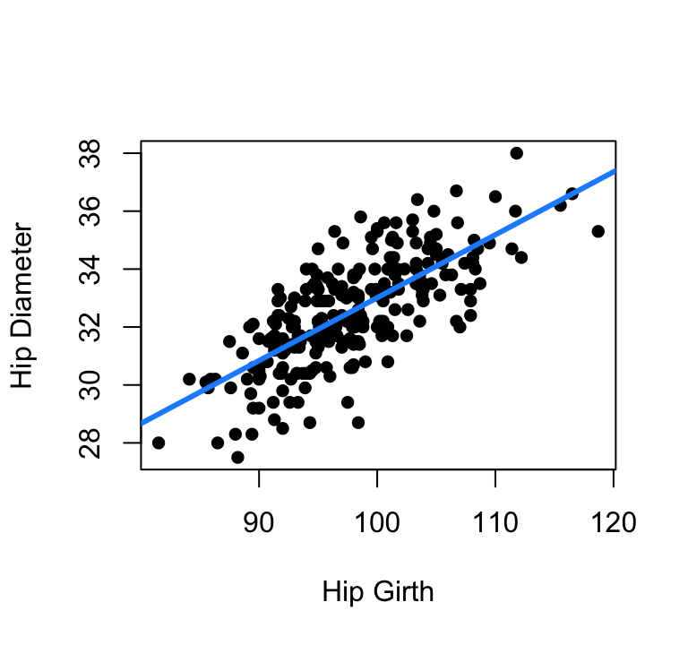
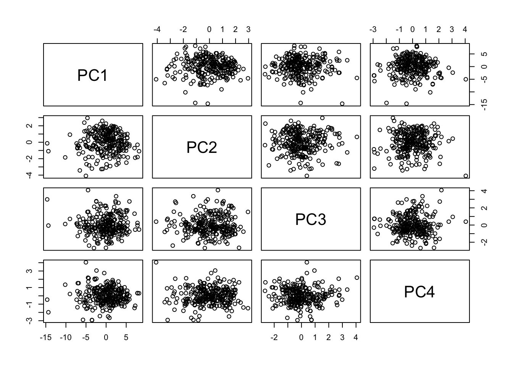
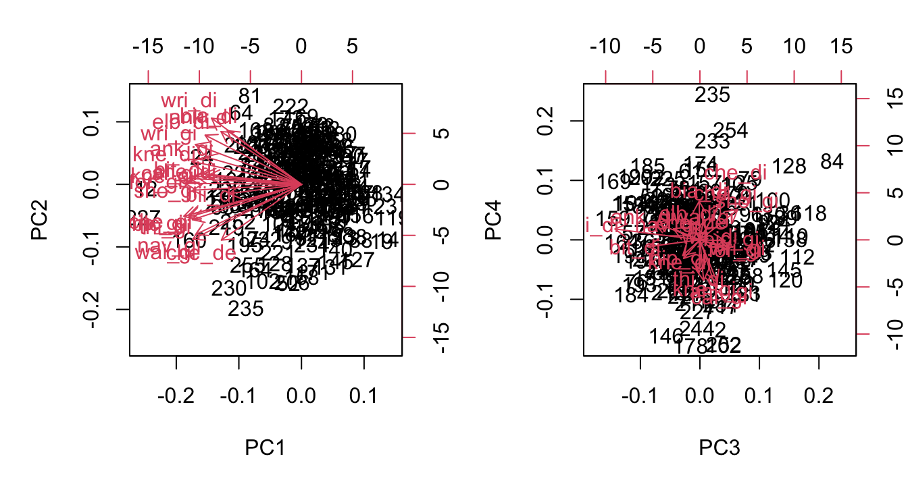
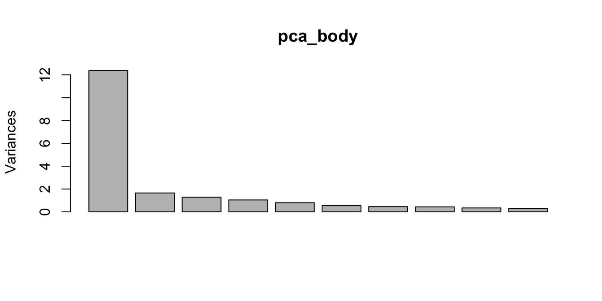

library(MASS)
library(caret)8 Building and Selection
8.1 Measures of model strength
8.1.1 Test Set and Training Set
It may seem counter-intuitive but sometimes the best choice you can make is to NOT use all of your data when fitting your model. If you begin by splitting your data into two, you can fit the model on one set, known as the “training set”, and then test how well the model performs on the remaining “test set”. This helps protect you from creating a model that is so well tuned to your specific data that it isn’t generalizable to the full population and won’t produce helpful predictions.
Discretion is allowed when deciding the relative sizes of the training and testing sets. At most you would split the data 50/50 putting half in each set randomly. In some cases with limited data you might shift that to putting as much as 80% in the training set and holding out the remaining 20% for a sanity check.
In R
Below is an example using the reduced glass refraction index data just seen at the end of Section 7.6. The fgl glass data frame has 214 rows to start with.
# set seed for reproducability
set.seed(1234)
# randomly select 150 rows for the training set
train_index<-sample(1:214, 150)
# put row numbers not selected into the test set
test_index<-(1:214)[!is.element(1:214, train_index)]
# create the two data sets
glass_train<-fgl[train_index,]
glass_test<-fgl[test_index,]
# fit the model with the training set
glass_model<-lm(RI~Al+Si+Ca+Ba, data=glass_train)
# find mean squared error in training set
mean(glass_model$residuals^2)[1] 1.160116# find mean squared error in test set
fit_values<-predict(glass_model, glass_test)
test_errors<-fit_values-glass_test$RI
mean(test_errors^2)[1] 0.9209567# if you want a formal test, can do t-test of errors
t.test(glass_model$residuals^2, test_errors^2)
Welch Two Sample t-test
data: glass_model$residuals^2 and test_errors^2
t = 0.58113, df = 152.37, p-value = 0.562
alternative hypothesis: true difference in means is not equal to 0
95 percent confidence interval:
-0.5738999 1.0522177
sample estimates:
mean of x mean of y
1.1601156 0.9209567 This shows that there is no evidence our model fitted using the training data doesn’t perform just as well on our test data. With this we can be confident that future refraction index values predicted using the model are reasonably accurate.
8.1.2 K-fold cross-validation
What if we just got lucky with our test set and training set sampling? K-fold cross-validation takes the idea of test/training set validation to the next level. Instead of separating the data into just two parts, a test set and a training set, k-fold cross validation splits the data into k parts. Often k is set to 5 or 10, but there’s no reason you can’t select any other number provided you have enough rows to reasonably split.
Once the data is split, the model is then fit k times; each time using k-1 groups as the training set and the held out group as the test set. Figure 8.1 below illustrates what would happen with 4-fold cross validation on a data set with only 8 rows.
First the 8 rows are randomly grouped into four groups of 2. The model is then run 4 times. In the example, rows 1 and 7 are in fold 1. The first time the model is fit, fold 1 points are set aside for testing and the model is trained on rows 2,3,4,5,6, and 8. For model 2, our second fold containing rows 2 and 3 are set aside for testing, and the model is trained using rows 1,4,5,6,7, and 8. In the end you’re left with four examples of how well the model fit using the approach you’ve selected fits data that was not involved in the fitting.

In R
Continuing with the glass refractive index scenario, we’ll complete 10-fold cross validation of a model containing Al, Si, Ca, and Ba as linear predictors using the train function in the caret library.
# set seed for reproducability
set.seed(1234)
# Define the parameters. Method is cross validation, k=10.
train_params <- trainControl(method = "cv", number = 10)
# Train your k models. Specify lm is type of model,
# and put in the training parameters set above
glass_models <- train(RI ~ Al+Si+Ca+Ba, data=fgl,
method = "lm",trControl = train_params)
# View the results of the cross-validation
glass_models$resample RMSE Rsquared MAE Resample
1 0.4672234 0.9570430 0.3934590 Fold01
2 0.6537417 0.9465408 0.5239035 Fold02
3 1.0238911 0.8434257 0.6182354 Fold03
4 1.4876875 0.7103225 1.0625717 Fold04
5 1.1690601 0.8168152 0.9380207 Fold05
6 1.0556602 0.8918505 0.8826193 Fold06
7 0.5904965 0.9885397 0.4773744 Fold07
8 1.2919068 0.7462664 0.7501642 Fold08
9 1.3814389 0.7731487 0.8307277 Fold09
10 1.0430018 0.8797080 0.7720872 Fold10These results indicate that over the 10 folds, the worst RMSE (square-root of mean squared error) among test holdouts happened when Fold4 was withheld from training. In this worst-case, the RMSE was 1.487. In the best-case, when Fold 1 was withheld, the RMSE was only 0.467. These are RMSEs calculated on the fold that was used as testing, not the folds that were used in training. If you prefer, the \(R^2\) values for the testing holdouts, and the MAE (mean absolute error) for the testing holdouts are also given for each of the k folds. Some variability over the folds is to be expected, and these ten look reasonably consistent indicating the RI~Al+Si+Ba+Ca model approach is not over-fitting and should apply generally to the population.
8.1.3 Adjusted \(R^2\)
Back in Chapter 2 we defined \(R^2\), the coefficient of determination, as:
\[R^2=1-\frac{SSError}{SSTotal}=\frac{SSReg}{SSTotal}\]
So whenever the sum of squared residuals, \(SSError\), decreases, the \(R^2\) goes up. In the world of multiple regression this creates a bit of a problem because every time you add a new term to the regression model the sum of squared residuals will go down whether the new term is really helpful or not. That’s why judging two models against each other using \(R^2\) just won’t work. Enter adjusted \(R^2\).
\[R_{adj}^2=1-\frac{SSError/(n-p-1)}{SSTotal/(n-1)}\]
Where \(n\) is the number of observations and \(p\) is the number of predictor variables. This makes it so just adding terms won’t necessarily increase your \(R^2\) - it will only improve if the increase in \(p\) is adding real value to your model.
Getting this adjusted \(R^2\) from R is simple. The basic model summary output includes this adjusted \(R^2\) right after the \(R^2\) value you’ve already come to know and love. Below is a highlighted example from the reduced glass refraction index model. The basic \(R^2\) with no adjustment is given as 0.8914, and the \(R_{adj}^2\) is given as 0.8883. Since the two are close in value, that is an indication that every term in the linear model is providing additional insight into the value of refraction index.

8.1.4 AIC and BIC
AIC (Akaike’s Information Criterion) and BIC (Bayes Information Criterion) are two metrics used to compare the relative strength of competing models. The specific values of AIC and BIC have no real meaning, but the relative size of AIC and BIC of two or more possible models can help you decide which model to use.
Calculation of both AIC and BIC includes the log of the likelihood of the model under review. What is a model’s likelihood? Simply put: it’s the probability of seeing the observed data if the fitted model is the truth. The process to figuring out this likelihood is beyond our scope so we’ll rely on R to do the work for us, but it’s good to have a sense of what it’s measuring.
\[ AIC=2(p+2)-2ln(\hat L) \]
and
\[ BIC=ln(n)(p+2)-2ln(\hat L) \]
where \(\hat L\) is the likelihood, \(p\) is the number of independent predictors in your model, and \(n\) is the number of observations. Notice the two are quite similar; the only difference is AIC has the number of estimated parameters multiplied by 2, while BIC penalizes larger parameter counts by a factor of \(ln(n)\).
For both AIC and BIC, the model with the lower value is the better choice. The stats library in R (a library usually installed by default) contains both an AIC and a BIC function for calculating these measures.
Here is an example considering two different models for glass refraction index; one with glass type indicators and one without:
mod_glass2<-lm(RI~Na+Al+Si+K+Ca+Ba+Fe+vehicle+headlight, data=fgl)
mod_glass3<-lm(RI~Na+Al+Si+K+Ca+Ba+Fe, data=fgl)
AIC(mod_glass2)[1] 598.3572AIC(mod_glass3)[1] 625.5007BIC(mod_glass2)[1] 635.383BIC(mod_glass3)[1] 655.7945In this case AIC and BIC agree that the model including glass type is better than the model without type. It is not always the case that AIC and BIC will agree though. That’s why for scientific rigor you should select which measure you want to use prior to calculating them.
8.2 Model Building
With \(R_{adj}^2\), AIC, and BIC we now have three different approaches to measure the quality of a model. This opens the door to ways we can build a multiple regression model piece by piece.
8.2.1 Forward Selection
The forward selection process is exactly what is sounds like: adding one variable at a time. At each step of this approach, each potential predictor is considered and one that improves \(R_{adj}\) the most, or decreases AIC or BIC the most, is added to the model. The process continues until adding one more term does not improve your performance metric.
8.2.2 Backward Elimination
This approach to model building is also exactly what it sounds like. With backward selection you begin with a large model including all possible predictors and then remove them one by one. Which one should be removed at each step can be decided based on which has the highest p-value for the test on \(\hat\beta\), by which one, when removed, increases \(R_{adj}\) the most, or by which one, when removed, decreases AIC or BIC the most. The process stops when removing any additional terms will only hurt the model quality.
8.2.3 Step-wise
The step-wise approach is a combination of forward selection and backward elimination. In this algorithm, the model can either grow or shrink but only ever one term at a time. The modeler uses discretion to add or subtract terms at each iteration, possibly alternating between adding and subtracting, but other paterns are possible as well. The process stops when it’s found that neither adding nor subtracting a term will improve the decision metric (\(R_{adj}^2\), AIC or BIC).
8.3 Building Examples in R
8.3.1 Forward
In the openintro library you will find a data frame called gifted that contains information on 36 gifted children. Along with their scores for a test of analytical skills, the data frame contains each child’s mother’s and father’s IQs, the age at which the child first said “mommy” or “daddy”, the age when the child first counted to 10 successfully, and the average number of hours per week the child reads with a parent, watches education TV, and watches cartoons.
To build a model working with forward selection and the AIC metric, we can use the step function built into the stats library as follows:
# specify an empty intercept-only model to start
mod_start<-lm(score~1, data=gifted)
# define the largest model possible as an upper bound on scope
mod_full<-lm(score~., data=gifted)
# specifying k=2 indicates using AIC. Each step will be printed out.
step(mod_start, scope=list(lower=mod_start, upper=mod_full),
direction="forward", k=2)Start: AIC=111.33
score ~ 1
Df Sum of Sq RSS AIC
+ motheriq 1 244.838 505.47 99.111
+ count 1 222.211 528.09 100.687
+ read 1 206.958 543.35 101.712
+ edutv 1 102.861 647.44 108.023
+ speak 1 53.846 696.46 110.650
+ cartoons 1 45.074 705.23 111.100
<none> 750.31 111.331
+ fatheriq 1 26.542 723.76 112.034
Step: AIC=99.11
score ~ motheriq
Df Sum of Sq RSS AIC
+ read 1 227.205 278.26 79.622
+ count 1 211.162 294.31 81.640
+ speak 1 38.747 466.72 98.240
+ fatheriq 1 30.712 474.76 98.854
+ edutv 1 27.814 477.65 99.073
<none> 505.47 99.111
+ cartoons 1 2.272 503.20 100.949
Step: AIC=79.62
score ~ motheriq + read
Df Sum of Sq RSS AIC
+ fatheriq 1 43.605 234.66 75.486
<none> 278.26 79.622
+ speak 1 11.834 266.43 80.057
+ edutv 1 5.904 272.36 80.850
+ count 1 3.617 274.65 81.151
+ cartoons 1 0.563 277.70 81.549
Step: AIC=75.49
score ~ motheriq + read + fatheriq
Df Sum of Sq RSS AIC
<none> 234.66 75.486
+ speak 1 12.5784 222.08 75.503
+ edutv 1 9.7910 224.87 75.952
+ count 1 4.3398 230.32 76.814
+ cartoons 1 0.8398 233.82 77.357
Call:
lm(formula = score ~ motheriq + read + fatheriq, data = gifted)
Coefficients:
(Intercept) motheriq read fatheriq
44.3656 0.4282 12.7663 0.3215 Now let’s examine each step of the output above. We specified in the step command that we wanted to begin with an empty intercept-only model and that the biggest model that could be considered is the full model with all predictors available in the gifted data frame.
At the start, our intercept-only model has an AIC of 111.33, and the first table in the output tells us the RSS (Residual Sum of Squares or SSError) and AIC for models that include the intercept plus each possible term one by one; each term gets a new row in the table. In the first round, R found that adding motheriq to the intercept produced an AIC of 99.111, adding count led to an AIC of 100.687, adding read led to an AIC of 101.712… and so on through to adding fatheriq making for an AIC of 112.034, an actual increase over the baseline start of 111.33. Since lower AIC is better, motheriq gets added to the model, and the second round begins.
Step two begins with the score~motheriq model. An intercept is included but not explicitly stated here. The table shows the results from adding each possible remaining predictor to the score to the model and finds that adding in read is the most helpful and will decrease the model AIC to 79.622.
Two more rounds of forward selection continue. The third round examines adding another term to the score~motheriq+read model, and selects adding in fatheriq. Round four looks to add to the score~motheriq+read+fatheriq model, but discovers adding any of the remaining possible terms will result in a higher AIC so the search ends and the score~motheriq+read+fatheriq is returned as the final model.
8.3.2 Backward
What if the backward elimination approach is taken? Same gifted data as used in the forward selection example, but now let’s start with the full model and remove terms one at a time until all \(\hat\beta\) p-values are below \(\alpha=0.05\).
We’ll start by checking the VIFs to determine if high multicollinearity should be taken care of first.
vif(mod_full)fatheriq motheriq speak count read edutv cartoons
1.196214 1.172998 1.182755 6.886769 6.896808 8.214684 8.373075 summary(mod_full)$coef Estimate Std. Error t value Pr(>|t|)
(Intercept) 75.5084856 24.02617507 3.1427593 3.934153e-03
fatheriq 0.2524925 0.13756072 1.8354988 7.707469e-02
motheriq 0.4000681 0.07290507 5.4875205 7.328886e-06
speak 0.1876429 0.14766697 1.2707168 2.142862e-01
count 0.2064897 0.26631214 0.7753673 4.446222e-01
read 7.5440549 5.58640059 1.3504321 1.876921e-01
edutv -4.2024429 2.24503495 -1.8718831 7.170324e-02
cartoons -3.3389901 2.01808208 -1.6545363 1.091872e-01Since time spent watching educational tv and time spent watching cartoons are strongly correlated with each other (correlation of -0.9234), it is not surprising that the two have high VIFs. For step one, we’ll remove cartoons because of the two, it is the one with the higher \(\hat\beta\) p-value.
mod_2<-lm(score~fatheriq+motheriq+speak+count+read+edutv, data=gifted)
vif(mod_2)fatheriq motheriq speak count read edutv
1.016676 1.154849 1.158823 6.650745 6.759192 1.217195 summary(mod_2)$coef Estimate Std. Error t value Pr(>|t|)
(Intercept) 49.8812173 18.90916625 2.6379385 0.0132717059
fatheriq 0.3406675 0.13056188 2.6092414 0.0142021633
motheriq 0.3850639 0.07447438 5.1704205 0.0000157951
speak 0.2223968 0.15048032 1.4779129 0.1502106664
count 0.2880610 0.26943473 1.0691311 0.2938293264
read 6.2384283 5.69364778 1.0956822 0.2822341840
edutv -0.7741723 0.88969865 -0.8701512 0.3913636419In our model without cartoons, read and count still have VIFs greater than 5. They are strongly positively correlated (0.9103) so even though edutv has the highest p-value, I’ll drop count this round since it has the higher p-value between count and read.
mod_3<-lm(score~fatheriq+motheriq+speak+read+edutv, data=gifted)
vif(mod_3)fatheriq motheriq speak read edutv
1.016335 1.136772 1.054395 1.072252 1.190811 summary(mod_3)$coef Estimate Std. Error t value Pr(>|t|)
(Intercept) 47.0554351 18.76811965 2.507200 1.781474e-02
fatheriq 0.3381140 0.13085088 2.583965 1.488079e-02
motheriq 0.3950256 0.07406516 5.333487 9.083768e-06
speak 0.1741009 0.14388176 1.210028 2.357167e-01
read 11.8220180 2.27313104 5.200764 1.321418e-05
edutv -0.9142163 0.88209867 -1.036411 3.082929e-01High multicollinearity is all cleared up now so the focus can be solely on p-values. Now we’ll drop edutv for having the highest p-value.
mod_4<-lm(score~fatheriq+motheriq+speak+read, data=gifted)
summary(mod_4)$coef Estimate Std. Error t value Pr(>|t|)
(Intercept) 42.7092528 18.31549501 2.331865 2.637951e-02
fatheriq 0.3242503 0.13032091 2.488091 1.842563e-02
motheriq 0.4207323 0.06987185 6.021485 1.154340e-06
speak 0.1898180 0.14325136 1.325070 1.948325e-01
read 12.2089372 2.24494494 5.438413 6.108775e-06Next to drop is speak.
mod_5<-lm(score~fatheriq+motheriq+read, data=gifted)
summary(mod_5)$coef Estimate Std. Error t value Pr(>|t|)
(Intercept) 44.3655659 18.48732491 2.399783 2.239759e-02
fatheriq 0.3214775 0.13183396 2.438503 2.047870e-02
motheriq 0.4282474 0.07045893 6.077973 8.662970e-07
read 12.7663191 2.23107427 5.722050 2.430603e-06And now we’ll stop because all remaining terms have a p-value smaller than our \(\alpha=0.05\) threshold. The final model of score~fatheriq+motheriq+read matches the one obtained using AIC and forward selection, but that need not be the case. In fact, let’s look at what happens if we were to perform our backward elimination without multicollinearity checks along the way.
Our first step would have us remove count because it’s p-value of 0.4446 is the highest in mod_full. So step two would now be:
mod_2<-lm(score~fatheriq+motheriq+speak+read+edutv+cartoons, data=gifted)
summary(mod_2)$coef Estimate Std. Error t value Pr(>|t|)
(Intercept) 75.7756404 23.85794658 3.176117 3.526914e-03
fatheriq 0.2430752 0.13607806 1.786292 8.451231e-02
motheriq 0.4082659 0.07163665 5.699121 3.646928e-06
speak 0.1511945 0.13901910 1.087581 2.857370e-01
read 11.5226177 2.19353467 5.252991 1.255677e-05
edutv -4.5968140 2.17157275 -2.116813 4.297596e-02
cartoons -3.6286687 1.96951508 -1.842417 7.566028e-02Then speak is removed…
mod_3<-lm(score~fatheriq+motheriq+read+edutv+cartoons, data=gifted)
summary(mod_3)$coef Estimate Std. Error t value Pr(>|t|)
(Intercept) 79.0467761 23.73960954 3.329742 2.312701e-03
fatheriq 0.2373610 0.13639031 1.740307 9.205533e-02
motheriq 0.4121118 0.07176701 5.742357 2.870557e-06
read 11.9013189 2.17231039 5.478646 6.030978e-06
edutv -4.8881415 2.16154516 -2.261411 3.114315e-02
cartoons -3.8202332 1.96759143 -1.941578 6.163171e-02Then fatheriq is removed…
mod_4<-lm(score~motheriq+read+edutv+cartoons, data=gifted)
summary(mod_4)$coef Estimate Std. Error t value Pr(>|t|)
(Intercept) 112.5034019 14.37637560 7.825575 7.855003e-09
motheriq 0.4177214 0.07400329 5.644633 3.383735e-06
read 11.6036137 2.23529988 5.191077 1.241780e-05
edutv -6.0534053 2.12140697 -2.853486 7.638249e-03
cartoons -5.1125813 1.88075148 -2.718372 1.064514e-02And now since all p-values are below our 0.05 threshold we would stop with the score~motheriq+read+edutv+cartoons model. Checking at this stopping point for multicollinearity would make us then question having both edutv and cartoons in the model.
vif(mod_4)motheriq read edutv cartoons
1.143219 1.044483 6.938065 6.878850 mod_5<-lm(score~motheriq+read+edutv, data=gifted)
summary(mod_5)
Call:
lm(formula = score ~ motheriq + read + edutv, data = gifted)
Residuals:
Min 1Q Median 3Q Max
-5.6035 -1.7634 -0.0054 1.4456 6.7931
Coefficients:
Estimate Std. Error t value Pr(>|t|)
(Intercept) 87.74186 12.18228 7.202 3.52e-08 ***
motheriq 0.40044 0.08076 4.959 2.24e-05 ***
read 11.99889 2.44313 4.911 2.57e-05 ***
edutv -0.79303 0.95214 -0.833 0.411
---
Signif. codes: 0 '***' 0.001 '**' 0.01 '*' 0.05 '.' 0.1 ' ' 1
Residual standard error: 2.917 on 32 degrees of freedom
Multiple R-squared: 0.637, Adjusted R-squared: 0.603
F-statistic: 18.72 on 3 and 32 DF, p-value: 3.405e-07Removing cartoons as having the higher of the two p-values leaves us with score~motheriq+read+edutv, a model that’s a bit different from the one found through forward selection with AIC and backward elimination with multicollinearity considered up front.
8.3.3 Step-wise
Lastly we’ll use the same step function used in our forward selection example to perform step-wise model selection using BIC. The scope of models to be considered is
# we begin with the mod_5 at the end of the backward elimination example.
# scope ranges from intercept-only to the full model as before
# specifying k=ln(n) indicates using BIC to make decisions
stepwise<-step(mod_5, scope=list(lower=mod_start, upper=mod_full),
direction="both", k=log(nrow(gifted)))Start: AIC=87.18
score ~ motheriq + read + edutv
Df Sum of Sq RSS AIC
+ cartoons 1 52.426 219.93 83.070
+ fatheriq 1 47.491 224.87 83.869
- edutv 1 5.904 278.26 84.372
<none> 272.36 87.184
+ speak 1 10.237 262.12 89.388
+ count 1 2.686 269.67 90.410
- read 1 205.296 477.65 103.824
- motheriq 1 209.278 481.64 104.123
Step: AIC=83.07
score ~ motheriq + read + edutv + cartoons
Df Sum of Sq RSS AIC
<none> 219.93 83.070
+ fatheriq 1 20.167 199.77 83.192
+ speak 1 6.877 213.06 85.510
+ count 1 0.475 219.46 86.576
- cartoons 1 52.426 272.36 87.184
- edutv 1 57.767 277.70 87.883
- read 1 191.180 411.11 102.007
- motheriq 1 226.047 445.98 104.937The output looks much like the output created in our forward selection case with one major difference: at each step the table of possible decisions includes both + terms and - terms. In step 1 the function considers adding cartoons, fatheriq, speak, or count, and also taking away edutv, read, or motheriq. Though labeled “AIC” the last column is actually a calculated BIC because we specified k=log(n). In R’s step function, the value of k specifies the multiplier to be put with the (p+2) measure of model size:
\[ step's \:AIC=k(p+2)-2ln(\hat L) \]
This means k=2 indicates you want traditional AIC, and k=ln(n) indicates BIC. Remember log(n) in R is using natural log.
8.4 Best model of size p
In the leaps library you can find a helpful function called regsubsets. The regsubsets function allows you to have R search every possible model with p predictors and tell you which is best.
Here is an example with our gifted data where regsubsets is asked to consider models ranging from having one predictor (in addition to an intercept) up to four predictors. As inputs we provide the form of the full model, the data set, nbest tells R how many “best” models we want of each size, and nvmax tells R how large a model we want to work up to.
best_mods<-regsubsets(score~., data=gifted, nbest=1, nvmax=4)
summary(best_mods)Subset selection object
Call: regsubsets.formula(score ~ ., data = gifted, nbest = 1, nvmax = 4)
7 Variables (and intercept)
Forced in Forced out
fatheriq FALSE FALSE
motheriq FALSE FALSE
speak FALSE FALSE
count FALSE FALSE
read FALSE FALSE
edutv FALSE FALSE
cartoons FALSE FALSE
1 subsets of each size up to 4
Selection Algorithm: exhaustive
fatheriq motheriq speak count read edutv cartoons
1 ( 1 ) " " "*" " " " " " " " " " "
2 ( 1 ) " " "*" " " " " "*" " " " "
3 ( 1 ) "*" "*" " " " " "*" " " " "
4 ( 1 ) "*" "*" "*" "*" " " " " " " From the top section of this output you can see there are “forced in” and “forced out” options we did not apply to any of the potential independent variables. The lower section then gives the results. The row labeled “1” has an asterisk under motheriq indicating the best one-predictor model uses motheriq. The row labeled “2” has asterisks for motheriq and read telling us the best two-predictor model includes those terms. The best three-predictor model is shown to be score~fatheriq+motheriq+read, and the best four–predictor model found was score~fatheriq+motheriq+speak+count.
Notice the best three-predictor model is not simply a subset of the best four-predictor model. While our forward selection, backward elimination, and stepwise models change only one term at a time making each successive model have only one variable different, the work done by regsubsets is exhaustive and doesn’t require one-at-a-time changes.
8.5 Lasso Regression
Recall from way back in Chapter 2 that our best linear fit solution comes from wanting to set the \(\hat\beta_i\) values in such a way that \(\sum (y_i-\hat{y_i})^2\) is minimized. The lasso technique modifies this goal so that instead we minimize:
\[ \sum_{i=1}^{n} (y_i-\hat y_i)^2 + \lambda \sum_{j=1}^{p}|{\beta_j}| \tag{8.1}\]
With this change, we are making the decision that minimizing the sum of squared errors is important, but we also want to minimize the sum of the absolute value of our \(\beta\) parameters weighted by a \(\lambda\) tuning parameter. The value in doing this, is that now we can start with all possible independent variables and see which get eliminated through a \(\hat\beta=0\) fit.
In R
We’ll apply this approach in R to our gifted data using the glmnet function in the glmnet library.
# first need our data in format of x and y matrices
mod_x<-as.matrix(gifted[,-1])
mod_y<-as.matrix(gifted[,1])
# use cross validation to explore different values of lambda
set.seed(1234)
step1<-cv.glmnet(mod_x, mod_y, alpha=1)
plot(step1$glmnet.fit)
This first plot looks at the values of the \(\beta\) coefficients over a wide range of \(\lambda\) values. Each \(\beta\) has one colored line associated with it. The different considered\(\lambda\)s are along the x-axis, but in the form of \(-log(\lambda)\), and the y-axis indicates the value of the \(\beta\)s for each corresponding \(\lambda\). Along the top of the plot the number of non-zero \(\beta\) coefficients is shown.
plot(step1)
This plot shows the mean-squared error for our model under various values of \(\lambda\). Vertical reference lines are drawn at the minimum mean-squared error, and at the minimum plus one standard error. The \(\lambda\)s that correspond to each of these key values are retrievable through step1$lambda.min and step1$lambda.1se.
step1$lambda.min[1] 0.2115333Then we can fit the model using the identified best \(\lambda\) and see which coefficients are non-zero:
step2<-glmnet(mod_x, mod_y, alpha=1, lambda=step1$lambda.min)
lasso.coef<-predict(step2, type="coefficients")
lasso.coef8 x 1 sparse Matrix of class "dgCMatrix"
s0
(Intercept) 63.4282931
fatheriq 0.2681240
motheriq 0.3592196
speak 0.1696803
count 0.2590080
read 5.8841220
edutv -0.5542266
cartoons . If not satisfied with only eliminating cartoons, we could change to a larger, non-optimal lambda:
step2<-glmnet(mod_x, mod_y, alpha=1, lambda=1.5)
lasso.coef<-predict(step2, type="coefficients")
lasso.coef8 x 1 sparse Matrix of class "dgCMatrix"
s0
(Intercept) 130.0439277
fatheriq .
motheriq 0.1734218
speak .
count 0.1340442
read 2.1009536
edutv .
cartoons . And here we see motheriq, count, and read are the three terms selected as having a non-zero coefficient with \(\lambda=1.5\). To use lasso strictly as a model selection tool, from here you would then return to the lm function to fit a model with these three terms are base any predictions on the \(\hat\beta\)s that result from simply fitting the least-squares criterion, not that seen in Equation 8.1.
mod_result<-lm(score~motheriq+count+read, data=gifted)
summary(mod_result)$coef Estimate Std. Error t value Pr(>|t|)
(Intercept) 85.3970316 11.39507108 7.4942079 1.565612e-08
motheriq 0.4157893 0.07710859 5.3922568 6.345091e-06
count 0.1820829 0.28048936 0.6491617 5.208663e-01
read 8.9042595 5.88322934 1.5134986 1.399682e-018.6 Principal Components Analysis (PCA)
Now we’re going to consider a much larger data set: the bdims data frame in the openintro library contains 25 measures on 507 physically active adults. In addition to gender, age, weight, and height, we have access to hip girth, bicep girth, knee diameter, and all kinds of body measurements. It’s great information, but as you might suspect these measurements are often highly correlated with each other. Larger hip girths tend to go with larger waists, small ankles make you more likely to have smaller wrists, and so on.
Principal Components Analysis is a way we can incorporate much of the valuable information offered by these 21 body measurements, without making our model have 21 separate slopes and a host of multicollinearity issues. How?
Let’s start smaller and focus on two of our body measurements: hip_gi, the hip girth as measured at the same level as bit_di, the bitrochanteric diameter. Bitrochanteric diameter is basically hip width at the top of the femur but below the pelvis. Obviously these two measurements should be correlated and they are. Limiting to only the 247 men in the bdims data frame, the two hip measurements are plotted here in Figure 8.2.

Now look at the plot with the regression line overlaid and think about rotating the entire scatter plot to right a bit so that regression line was the new x-axis. Go ahead, pick up your book or screen (or turn your head) and rotate the graph so the blue line is our new horizontal. If you knew where along that new x-axis a person lied, you’d know a lot about their hip size. You’d have a combination of hip girth and hip diameter information with just that one blue-axis variable. The vertical variation up and down from that line is the relatively small amount of information you’re giving up by only using one variable instead of the original two.
We could repeat this process over and over with pairs of body measurements we know are related, at each point picking the one-dimensional combination of them and effectively cutting our model size in half while giving up relatively little. But 1) that’s time consuming and 2) what if we don’t have the proper knowledge to know which terms to pair?
Stop and think about how that blue line does such a good job simplifying the two dimensions into one main direction of variability and then one minor direction of variability. What if we could take our full 21 dimensions of body measurements and get the computer to tell us the axes that align with the highest variability and the least variability? That is what we can do with principal components analysis, often referred to simply as PCA.
The linear algebra that’s driving this change in basis is beyond our scope here, but instead we will focus on how to apply the method in R.
In R
First, the data must be numeric in nature. For our body measurements, we’ll look only at women, and only at the first 21 columns which cover bia_di (biacromial diameter) through wri_gi (wrist girth). There are a few different functions in R that will perform PCA, but we’ll use the prcomp option that comes in the stats library.
womens_bdims<-bdims[bdims$sex==0,1:21]
# or if you prefer:
womens_bdims<-bdims |>
filter(sex==0) |>
select(bia_di:wri_gi)
pca_body<-prcomp(womens_bdims, scale.=TRUE)Note that when prcomp is called, the scale.=TRUE is added in. What this does is tell R that before finding the axes of highest variability, the data should be scaled. This keeps us from labeling the dimensions that just happen to have bigger numbers from dominating the findings. If all body measurements were taken in cm but we transformed knee diameter into mm, we’d think a difference of 100 in the knee measurement was huge and a difference of 10cm in a waist was tiny. The scale.=TRUE takes each column and converts it to z-scores using the column means and standard deviations. This was a 3-standard deviation high measure on calf girth gets the exact same attention as a 3-standard deviation high measure on ankle girth. Always scale in PCA.
Figure 8.3 shows the first four principal components. The prcomp function will create as many principal components (new axes) as there are original dimensions to your data. They are ordered based on the amount of variability they can explain. Notice that every plot in the scatter plot matrix looks like just a random blob. That will always happen as these new axes will be uncorrelated with each other by design.

A biplot can be used to get a sense of how the original columns relate to the new principal components. Two biplots showing PC1 vs. PC2 and PC3 vs. PC4 are below in Figure 8.4.
par(mfrow=c(1,2))
par(mar=c(4,5,2,2))
biplot(pca_body)
biplot(pca_body, choices=c(3,4))

Both of these biplots are a bit hard to read because there are 21 red vectors all on top of each other. The first gives some discernable information though. It shows that PC1 involves a negative multiple of every column, while PC2 looks to be about half positive and half negative. The numeric information for how the original columns map to the principal components is given in the $rotation element of our completed prcomp object.
Here are the mappings for the first two principal components, rounded to five decimal places. They confirm the all-negative loadings for PC1 and the roughly even positive/negative split for PC2.
round(pca_body$rotation[,1],5) bia_di bii_di bit_di che_de che_di elb_di wri_di kne_di
-0.16001 -0.15629 -0.21022 -0.17278 -0.20168 -0.20772 -0.19393 -0.23672
ank_di sho_gi che_gi wai_gi nav_gi hip_gi thi_gi bic_gi
-0.17357 -0.23440 -0.24326 -0.23461 -0.22822 -0.25381 -0.23532 -0.24366
for_gi kne_gi cal_gi ank_gi wri_gi
-0.25137 -0.24002 -0.22807 -0.20682 -0.22877 round(pca_body$rotation[,2],5) bia_di bii_di bit_di che_de che_di elb_di wri_di kne_di
0.31718 -0.05449 0.06264 -0.32902 0.05383 0.29060 0.39074 0.13547
ank_di sho_gi che_gi wai_gi nav_gi hip_gi thi_gi bic_gi
0.31147 -0.03461 -0.18167 -0.32502 -0.29562 -0.18830 -0.20851 -0.19328
for_gi kne_gi cal_gi ank_gi wri_gi
0.00609 0.03437 0.04863 0.16233 0.23538 Interested in how much of the total variability can be seen in each principal component? That information is seen in the $sdev element of the prcomp object and can be seen in a bar chart with the plot command:
# convert standard deviations to variance by squaring
variances<-pca_body$sdev^2
# look at variance for first 8 components, rounded
round(variances[1:8],4)[1] 12.3825 1.6555 1.2828 1.0451 0.8028 0.5475 0.4608 0.4358# proportion of total variance for first 8 components, rounded
round(variances[1:8]/sum(variances),4)[1] 0.5896 0.0788 0.0611 0.0498 0.0382 0.0261 0.0219 0.0208# see plot of variance per component
plot(pca_body)

But what does any of this have to do with regression? Well, now that we have our principal components we can use them as predictors in our model to maximize the information from our data set while minimizing the number of \(\beta\) parameters that need estimating.
#create BMI outcome to estimate with the measurements
bmi<-bdims$wgt/(bdims$hgt/100)^2
#limit to only the women
bmi_f<-bmi[bdims$sex==0]
#fit model with first seven principal components
mod_bmi<-lm(bmi_f~pca_body$x[,1:7])
#look at model summary
summary(mod_bmi)
Call:
lm(formula = bmi_f ~ pca_body$x[, 1:7])
Residuals:
Min 1Q Median 3Q Max
-3.8904 -0.7937 -0.0327 0.7054 4.1316
Coefficients:
Estimate Std. Error t value Pr(>|t|)
(Intercept) 22.27793 0.07581 293.853 < 2e-16 ***
pca_body$x[, 1:7]PC1 -0.77013 0.02159 -35.677 < 2e-16 ***
pca_body$x[, 1:7]PC2 -0.88505 0.05904 -14.992 < 2e-16 ***
pca_body$x[, 1:7]PC3 0.35202 0.06707 5.249 3.25e-07 ***
pca_body$x[, 1:7]PC4 -0.22522 0.07430 -3.031 0.00269 **
pca_body$x[, 1:7]PC5 -0.05495 0.08478 -0.648 0.51751
pca_body$x[, 1:7]PC6 0.24817 0.10266 2.417 0.01634 *
pca_body$x[, 1:7]PC7 -0.11019 0.11190 -0.985 0.32573
---
Signif. codes: 0 '***' 0.001 '**' 0.01 '*' 0.05 '.' 0.1 ' ' 1
Residual standard error: 1.222 on 252 degrees of freedom
Multiple R-squared: 0.8595, Adjusted R-squared: 0.8556
F-statistic: 220.2 on 7 and 252 DF, p-value: < 2.2e-16This model summary shows us that just because one component covers more variability than another, doesn’t mean that component is more important when it comes to predicting our outcome. PC6 covers only 2.61% of the total variability compared to PC5’s 3.82%, but when it comes to predicting a person’s BMI PC6 is more helpful than PC5. Since PC1 and PC2 are so strongly related to BMI, it turns out a model with just those two predictors has an \(R_{adj}^2=0.8337\).- not bad for a 3-\(\beta\) model on a complex problem.
You can run forward selection, backward elimination, or step-wise building algorithms on the principal components just as you would the raw data - but now with the advantage of not having multicollinearity to navigate.
PCA isn’t without it’s downsides. Using this type of approach and model might be very powerful, but it isn’t nearly as interpretable as a model built on the original data. Depending on the context of the work, interpretability might take a back seat to predictive power which makes PCA a strong option. Also, sometimes looking at the PCA loadings themselves can provide insight into the interdependencies and relationships within your data.
Bottom line: PCA is a powerful tool to have in your tool box, but it shouldn’t be the first tool you turn to when fitting a model.